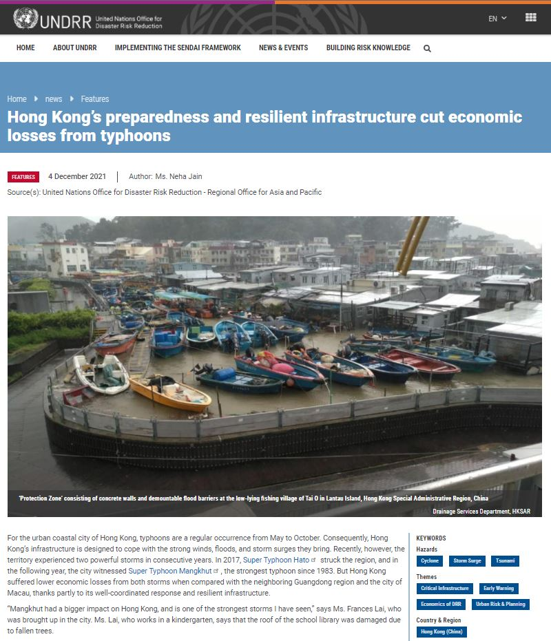
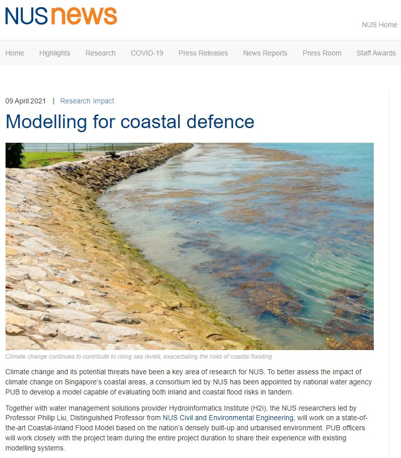
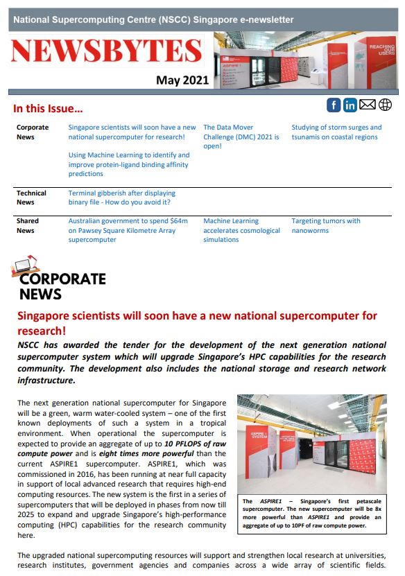

Dr. Wang's research on concurrent coastal disasters is highlighted by UNDRR.
For future developments in coastal areas, “policymakers should pay great attention to mean sea level rise, which will affect many low-lying areas in Hong Kong in the near future,” Dr. Wang emphasized. His newly published study simulates the impact of a concurrent storm-tide-tsunami event if Hong Kong is inundated by a storm surge from a typhoon with high astronomical tides coinciding with a potential tsunami generated from an earthquake in the Manila subduction zone.

NUS News: Modelling for coastal defence
Together with water management solutions provider Hydroinformatics Institute, the NUS researchers led by Prof. Philip Liu, Distinguished Professor from NUS Civil and Environmental Engineering, will work on a state-of-the-art Coastal-Inland Flood Model based on the nation’s densely built-up and urbanised environment. PUB officers will work closely with the project team during the entire project duration to share their experience with existing modelling systems. Prof. Liu is leading the consortium to develop the Coastal-Inland Flood Model to support the planning of coastal adaptation measures. With him is research team member Dr. Wang from NUS Civil and Environmental Engineering.

NSCC Newsbytes
A team of reseachers at the Department of Civil and Environmental Engineering at the National University of Singapore are using NSCC’s supercomputing resources to investigate the potential compound impact of storm surges and tsunamis on Macau and Hong Kong. "Numerical simulation of the hydrodynamics on the scale of the South China Sea region covering the entire typhoon process over several days is extremely computationally intensive, especially when we have to look at a variety of scenarios. Running the simulations in parallel on NSCC’s HPC resources significantly saves our time on the acquisition of numerical data, so that we can speed up our research and focus on the analysis."